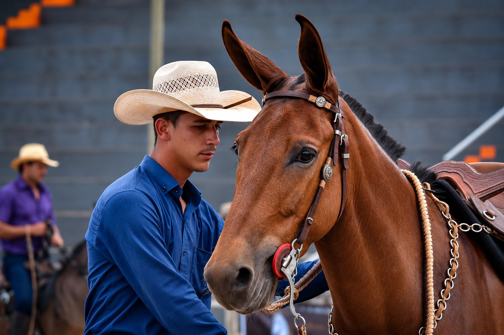

Aprenda do zero as técnicas de transição de embocadura, posicionamento estético e impulsão que transformam qualquer muar em um animal leve no bocado, estiloso e que para todo mundo na pista.
- +200 mil seguidores
- Campeão Nacional
- Referência no Brasil
Seu muar tem potencial. Faltava só o método certo para ele virar referência.
Você reconhece seu muar em alguma dessas situações?
- Duro no bocado.
- Sem estilo e nem posicionamento.
- Você tenta, mas não evolui.
- Vê os outros com animais trabalhados e fica se perguntando como.
Se você respondeu sim para qualquer uma dessas perguntas, você está no lugar certo. Eu criei um método que resolve exatamente isso.
"O problema não é você nem seu animal — é que ninguém te ensinou o método certo"
QUEM ENSINA

Meu nome é João Vitor, tenho 23 anos e sou treinador profissional há 7 anos. Monto desde criança e sempre fui apaixonado por muares. Desde muito cedo, descobri que treinar animais era mais do que uma profissão: era a minha vocação. Tive uma infância difícil, com uma situação financeira bastante limitada, mas isso nunca me impediu de correr atrás dos meus sonhos. Sempre busquei conhecimento onde fosse necessário. Ao longo dessa jornada, reuni ensinamentos de diferentes métodos e linhas de treinamento. A partir dessa experiência, desenvolvi um método próprio, combinando as técnicas que mais geraram resultados na prática. Hoje, ensino exatamente o que faço com os meus animais, mostrando cada etapa do processo de forma clara e objetiva, para que qualquer pessoa possa aplicar o método e alcançar resultados consistentes.
O QUE VOCÊ VAI APRENDER
-
Aula 1
Transições de embocadura — do básico ao refinado
-
Aula 2
Posicionamentos estéticos — o que transforma a aparência do animal
-
Aula 3
Impulsão — a base que poucos dominam e todos querem
PARA QUEM É ESSE TREINAMENTO?
-
Para quem está começando do zero
-
Para quem tem muar e quer evoluir
-
Para quem admira animais bem trabalhados
-
Não é para quem quer resultado sem dedicação
COMO FUNCIONA?
-
100% online
-
Vídeos gravados
-
Assiste no seu tempo
-
Acesso vitalício
O QUE VOCÊ VAI RECEBER
-
Curso completo
-
Acesso imediato e vitalício
-
Suporte para tirar dúvidas
INVESTIMENTO
De R$ 297,00 por
R$ 197,00
OU 12x de R$20,25
Pagamento único • Acesso imediato
PERGUNTAS FREQUENTES
Tire suas principais dúvidas antes de garantir sua vaga.
Precisa ter experiência?
Não. Você não precisa ser um treinador profissional, mas é importante já ter uma noção básica de doma, pois este curso é focado na etapa de flexionamento, e não na iniciação do animal.
Quando as aulas ficam disponíveis?
As aulas são liberadas imediatamente após a confirmação da sua inscrição. Você receberá os dados de acesso por e-mail e também poderá assistir pelo aplicativo Greenn Club.
Por quanto tempo tenho acesso?
Você terá acesso ao curso por 1 ano, podendo assistir e revisar as aulas quantas vezes quiser, no seu ritmo.
Funciona para qualquer muar?
Sim. As técnicas podem ser aplicadas em muares e equinos. Durante o curso, você entenderá como adaptar o método às características de cada animal.
Como acesso o curso?
Após a confirmação da inscrição, você receberá um e-mail com todas as instruções de acesso. Também poderá acessar o conteúdo pelo aplicativo Greenn Club, disponível para celular.